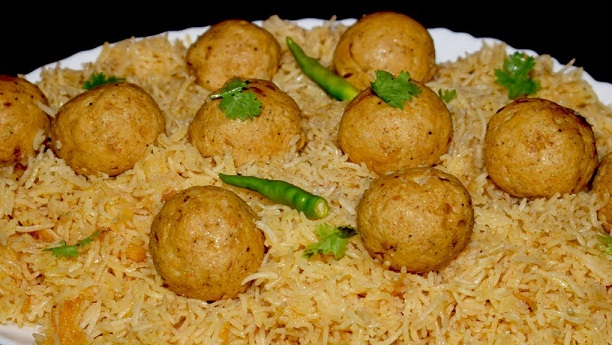

ARAB KOFTA PULAO

DESCRIPTION
Arabian kofta pulao is a famous Arab recipe.
It involves first preparing meatballs and then cooking rice pulao
and then serving with usual add-ons like raita, salad and chutney.
Kofta is the specialty of the dish; you can use either chicken or mutton,
whichever suits your situation. After eating so many types of pulao,
having a meatballs pulao would surely give you a superb taste
that you have been missing yet.
INGREDIENTS
- Rice (1 KG)
- Butter (250 GRAM)
- Salt (as required)
- Hot Spices (as needed)
- Onions (4 PCS)
- Meat Finely Chopped (1 KG)
- Eggs (2 to 3 PCS)
- Garlic Paste (1 TABLESPOON)
- Green Chillies (as required)
- Cumin (1 TEASPOON)
- Pepper (1 TEASPOON)
- Yogurt (250 GRAM)
- Ginger Paste (1 TABLESPOON)
- Cardamom (4 to 5 PCS)
- Red Pepper (as required)
STEPS
- Mix all the spices and eggs in the minced meat.
- Make small meatballs and fry them in butter.
- Then for the rice.
- Fry 250 gram of onion separately in butter.
- When the onion turns brown, add crushed hot spices, salt and yoghurt in it.
- Add a little water and fry well.
- Then add the fried meatballs. When the spices and meatballs are well fried.
- Add one liter of water, when the water starts to boil.
- Add rice, when cooked, take it off.